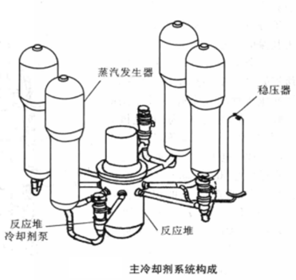

中核集团
2017年核科普开放周活动之第二届全国高校学生课外“核+X”创意大赛
核+动力
主页
概况
核能
核动力
核反应堆
概况
压水堆
基本构成——核能生成系统
主冷却剂系统——内能转换系统
二回路系统——动能输出系统
安全壳
核电站
概况
中国核电站
潜艇核动力装置
概况
中国核潜艇
水面船舰核动力装置
概况
中国核动力航母
空间核能装置
概况
空间核电源
空间核推进装置
发展和研究前景
中、小型核动力发展情况介绍
中、小核动力未来研究的方向
结论
主冷却剂系统——内能转换系统
目前核电站用的压水堆主冷却剂系统绝大部分采用分散形式布置，反应堆冷却剂系统按照其容量南两个、三个或四个相同的冷却环路组成。每一个环路有一台蒸汽发生器，一台或两台(其中一台备用)主冷却剂泵，并用主管道把这些设备与反应堆连接起来，构成密闭的回路。这样的系统称主冷却剂系统(也称一回路系统)，如图所示，整个系统共用一个稳压器，系统的压力依靠稳压器来维持。为了完成主冷却剂系统的主要功能，还附有一系列的辅助系统。在核电站中，主冷却剂系统放置在钢筋混凝土安全壳内，万一发生管道破裂，安全壳能容纳所释放出来的全部蒸汽和裂变产物。
如图为压水堆核电站流程示意图。兼作慢化剂和冷却剂的热水在15~16 MPa的高压下先经堆芯周围的环形空间向下流，然后再向上流过堆芯，温度升高到320~330 ℃，然后流经蒸汽发生器时把热量传给二回路侧的水以产生蒸汽。从蒸汽发生器流出的主冷却剂借助主冷却剂泵又返回到反应堆。主冷却剂系统是在高温、高压下工作的，主冷却剂系统的设备和管路构成了压力边界，它是防止系统内放射性外漏的重要屏障。
